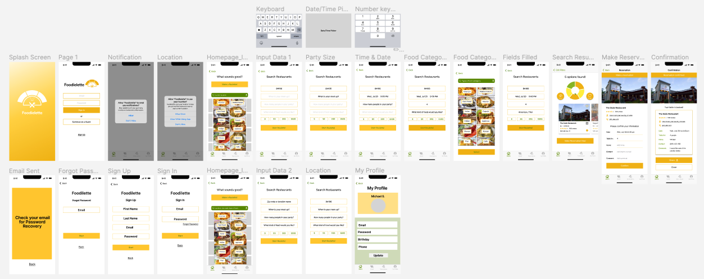

01. USER RESEARCH & FINDINGS
Research Objectives:
- Understand the end-to-end process of how foodies are currently making restaurant decisions.
- Understand how they stay on their budget when deciding where to eat.
- Understand the thinking process of how people decide to meet with their friends within the radius.
Methods:
- Three 1-1 Interviews
- 28 Survey Responces
Findings
Through our user research, we found the following challenges that people have faced when making plans for eating out:
- Difficult to make a decision as a group
- Make sure everyone is happy with the decision
- Too many options
- Information in apps is outdated or not accurate
How might we help the users save time as well as improve how to decide location, price and accommodations?
02. USER PERSONA

03. USER FLOW
04. LO-FI WIREFRAMES
05. COLOR PALETTE & LOGO DESIGN
06. USABILITY TESTING & FINDINGS
We conducted four usability tests to ensure each process is easy to be understood by our potential users.
Tasks:
- Make a roulette without signing in
- Make a reservation
- Create an account
07. HI-FI PROTOTYPES & INTERACTIVE PROTOTYPE
